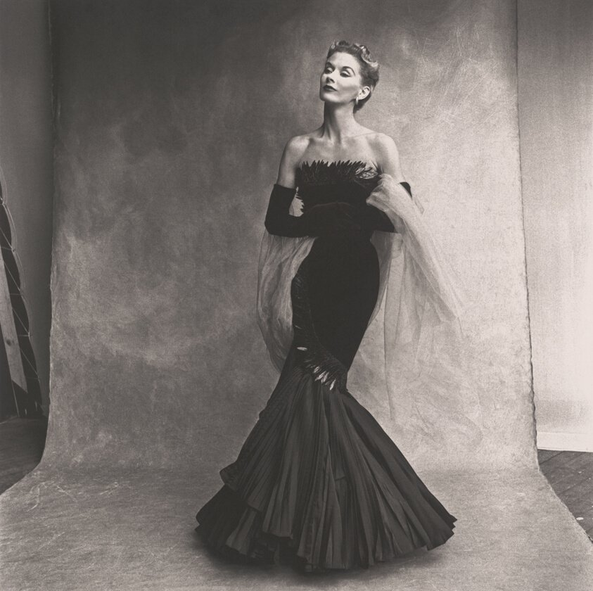

Rochas Mermaid Dress (Lisa Fonssagrives-Penn), Paris
Irving Penn · 1950, printed June 1979 · Platinum-palladium print · 50 × 50 cm (image) · Art Institute of Chicago
In copyright. Look and learn: shown for study, not for download.
Vogue sent Irving Penn to Paris in July 1950 to photograph the autumn couture collections. For ten days the clothes were rushed to an old top-floor studio, where he posed the models in front of a discarded theatre curtain. The model here is Lisa Fonssagrives, whom he had met at a shoot in 1947; they married a few weeks after this picture was taken. Penn made this platinum-palladium print in June 1979 and gave it to the Art Institute of Chicago in 1996.